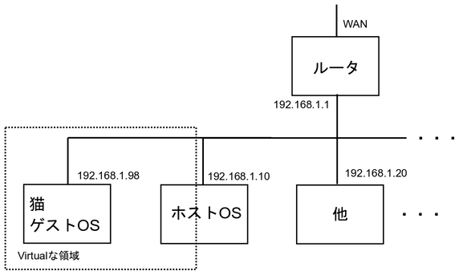
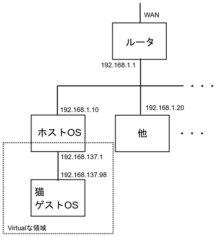
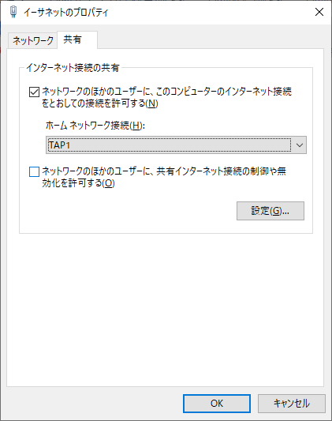
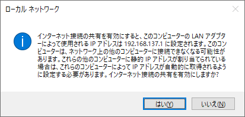
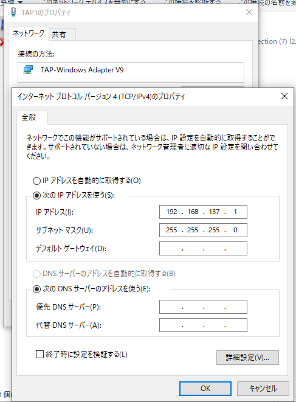
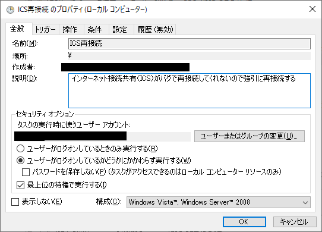
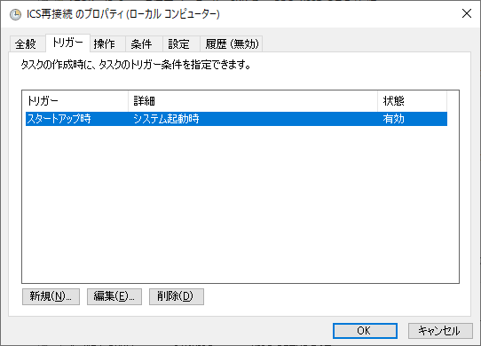
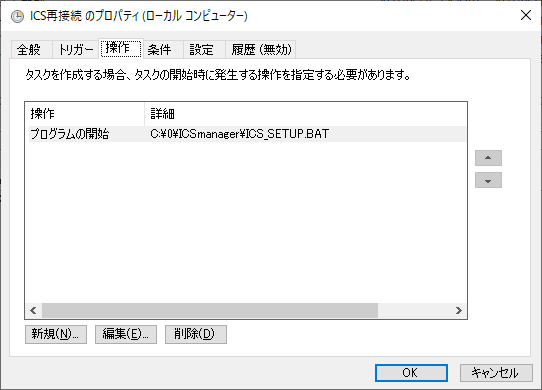
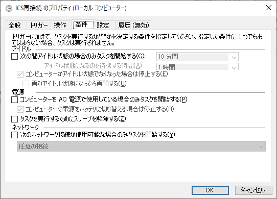

Neko Project 21/WのLAN設定
Neko Project 21/WはMELCO LGY-98 LANボードを搭載していますが、実際に外部ネットワークに繋ぐには色々とやることがあります。
ネットワーク設定に関する基本的な知識はある前提で書いています。
また、以下の説明においてホスト・ゲストと書いているときは以下の意味です。
- ホスト・・・Neko Project 21/Wを動かしているPCやOS
- ゲスト・・・Neko Project 21/Wの中で動かしているPCやOS
↓TAP-Win32についてはこのページの方が詳しいかもしれません
TAP-Win32 のインストールおよび設定方法（リンク切れのためInternet Archiveへのリンク）
前準備
仮想マシンの外と通信するためには、まずは仮想ネットワークアダプタとしてOpenVPNに含まれるTAP-Win32を入れる必要があります。
-
OpenVPNのインストーラを入手して、それに含まれるTAP-Win32をインストールしてください。
必要となるのは「TAP Virtual Ethernet Adapter」のみなので、OpenVPNの本体などをインストールする必要はありません（カスタムインストールで外すとよい）。
入れた後はホストPCを再起動しておいた方が良いと思います。
-
TAP-Win32をインストールするとケーブル未接続のアダプタ（TAPアダプタ）が出現するので、アダプタの名前を確認しておいて下さい。このときにTAPアダプタをわかりやすい名前にしておくと後の設定で楽です。
-
Neko Project 21/WのNetwork OptionでTAPアダプタを選択してください。TAPではないアダプタも選べますが選んでも無意味です。

-
ゲストOSにMELCO LGY-98のドライバを入れて下さい。
ポートと割り込みについてはNeko Project 21/WのNetwork Optionで設定した内容に一致させて下さい。
設定画面ではIQRではなくINTで書かれているので注意。
INTとIRQの対応が分からない場合はINT-IRQ対応表を参照のこと。
-
これで前準備は完了です。
ネットワークに繋ぐ① ホスト―ゲスト間でファイル共有したいだけの場合
ホストOSとだけ通信したい場合は割と簡単です。
Neko Project 21/W 仮想マシンのLGY-98とホストPCのTAPアダプタがクロスケーブルで直結されていると思って設定すればOKです。
-
TAPアダプタのIPアドレス設定を適切に設定する（例：192.168.98.1）。
ネットワークアドレスはホストの別のアダプタと被らないようにすること。
デフォルトゲートウェイやDNSの設定は不要（空白でよい）。
-
Neko Project 21/WでゲストOSを起動する。
-
ゲストOSのIPアドレスをTAPアダプタのIPアドレスと被らないように適切に設定する（例：192.168.98.98）。
-
デフォルトゲートウェイやDNSの設定は不要（空白でよい）。
-
これでホストとファイル共有などが出来るはずです。
挙動がおかしいときはホストPCを再起動した方が良いかもしれません。
ネットワークに繋ぐ② インターネットに繋ぎたい場合
ホストPCの外と通信する方法として、ブリッジ接続を使う方法とインターネット接続の共有(ICS)を使う方法があります。
ブリッジ接続は設定が楽ですが、環境によってはまれにブルースクリーンを発生させるようです。
また、VMwareのネットワークブリッジとケンカするという噂もあるのでそのあたりも要注意。
インターネット接続の共有を使う場合、設定がややこしいですが私の環境ではブルースクリーンが出ることもなく安定しています。
個人的にはこちらを推奨します。
ただし、LAN内の他のPCからゲストOSにアクセスすることは出来ないと思います。
Windowsをルーター化する方法もひょっとしたら出来るのかも知れませんが、半日近く格闘しても思った通りに動かなかったので私は諦めました。
ブリッジ接続を使う方法
【構成イメージ図】

-
「インターネットに繋がっているアダプタ」と「TAPアダプタ」を選択し、ブリッジ接続を作成する。

-
出来上がったブリッジアダプタにホストPCのIPアドレスなどを設定する。ブリッジ接続前の「インターネットに繋がっているアダプタ」の設定を入れればよい。
-
Neko Project 21/WでゲストOSを起動する。この時点でホストと同じネットワークに繋がった状態になっている。
-
ゲストOSのIPアドレスを適切に設定する。ホストPCだけでなくネットワークの他の機器とも被らないようにすること。
-
ゲストOSのデフォルトゲートウェイとDNSを適切に設定する。基本的にはホストPCと同じで良いはず。
-
これで多分インターネットに繋がっているはずです。
挙動がおかしいときはホストPCを再起動した方が良いかもしれません。
インターネット接続の共有を使う方法
【構成イメージ図】

-
インターネットに繋がっているアダプタのプロパティを開く。
-
共有タブで「ネットワークの他のユーザーに、このコンピュータのインターネット接続を通しての接続を許可する」にチェックを入れる。
-
ホームネットワーク接続のコンボボックスはTAPアダプタを選択する。

-
OKを押すと（TAP側の）アダプタのアドレスが192.168.137.1に変更されると言ってくるので問題なければOKする。
なお、このアドレス設定は固定で変更は出来ないらしいです。

-
TAPアダプタのプロパティを開き、IPアドレス設定が192.168.137.1になっていることを確認。
デフォルトゲートウェイやDNSサーバーは空にしておく（自分自身がルータなので）。

-
Neko Project 21/WでゲストOSを起動する。
DHCPでIPアドレスが192.168.137.xxxに自動設定されていたらそれでOK。
されていなかったら次の手順に進む。
-
ゲストOSのIPアドレスを192.168.137.xxxにする（どうせNeko Project 21/Wしかいないので番号は適当で良い。ただしホストPCの192.168.137.1と被らないようにすること）。
サブネットマスクは255.255.255.0にする。
-
ゲストOSのデフォルトゲートウェイを192.168.137.1にする。DNSは必要なら適当に設定する。
-
これで多分インターネットに繋がっているはずです。
繋がらないときはファイアウォールでブロックされたりしていないか確認。
ところが、上記設定はホストPCを再起動すると正しく動きません（設定画面では一見有効なように見えますが、一度無効にして再度有効化しないと動きません）。
また、この中途半端な状態ではNeko Project 21/Wのネットワークも不安定になるようです。
面倒ですが、再起動の度に一旦無効化して再度有効化するという手順を踏むのが確実です。
次のようにすると再起動しても解除されないようになると書いてありましたが私の環境では上手くいきませんでした。
上手くいく環境もあると思いますので一応掲載しておきます。
-
レジストリエディタを起動する
-
HKEY_LOCAL_MACHINE\Software\Microsoft\Windows\CurrentVersion\SharedAccessに移動
-
DWORD値でEnableRebootPersistConnectionを追加し、値を1にする
-
services.mscでInternet Connection Sharing (ICS)を自動起動にする
上記が上手くいかない場合や上手くいく気がしない場合は、インターネット接続の共有(ICS)を有効化無効化するプログラム（https://github.com/utapyngo/icsmanager 等）を拾ってきて、起動時にICSを一旦無効にしてから再度有効にするタスクを足すことでなんとかなります。
このプログラムは自力でコンパイルしないと駄目ですが、Visual Studio CommunityとかでIcsManager.slnを開いて何も考えずReleaseでコンパイルするだけですのでそんなに難しくないと思います。コンパイルが嫌ならPowerShell用のスクリプトもネットに転がっているのでそれを使う手もあります。
（例）コマンド
IcsManager.exe disable
IcsManager.exe enable {インターネットに接続されているアダプタのGUID} {TAPアダプタのGUID}
※アダプタのGUIDは何もオプションを付けずに起動すれば一覧表示されます。
有効化と無効化は管理者権限での実行が必要ですので、タスクスケジューラを活用する必要があります。
コマンドを順次実行すれば良いので、上記のコマンドを書き込んだバッチファイルを用意しておくのが良いでしょう。
（例）タスクスケジューラへの設定
「最上位の特権で実行する」にするのがポイントです。起動タイミングをシステム起動時にするかログイン時にするかはお好みで設定して下さい。




Windowsをルーター化する方法
HKEY_LOCAL_MACHINE\Software\Microsoft\Windows\CurrentVersion\Tcpip\Parameters\IPEnableRouterをオンにしてみたり、Routing and Remote Accessを有効にしてみたりと色々しましたが、結局上手くいきませんでした。
やり方が分かる人がいたら教えて下さい･･･
トップに戻る